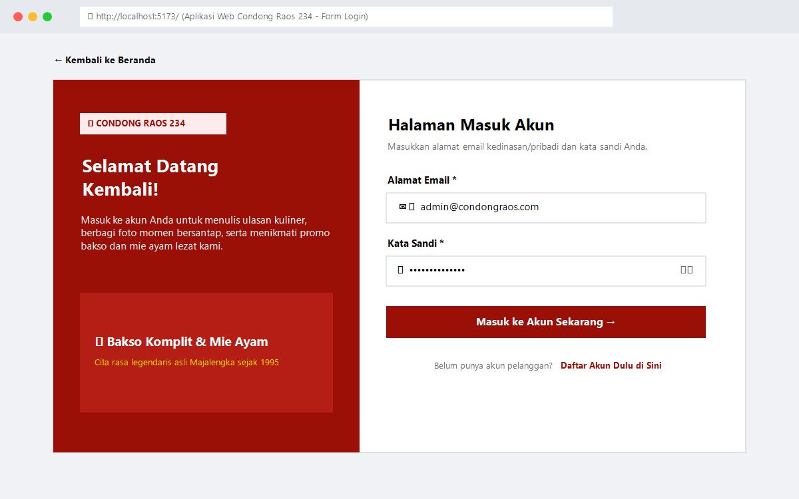
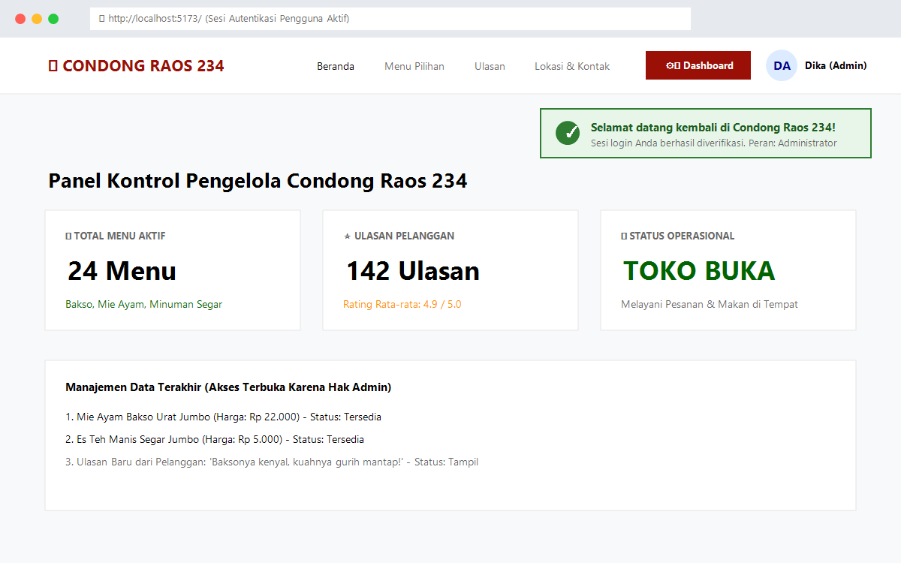
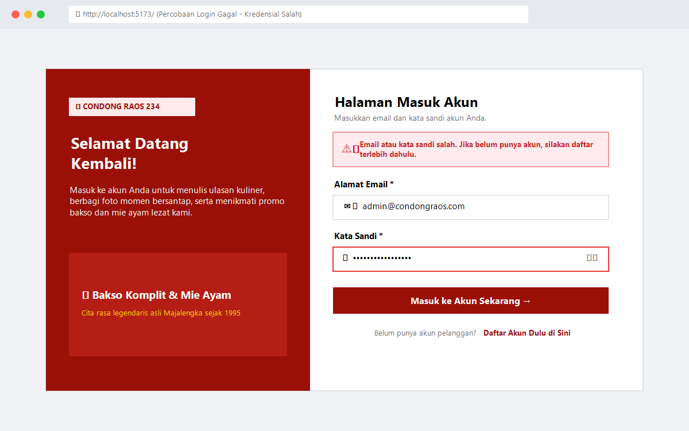
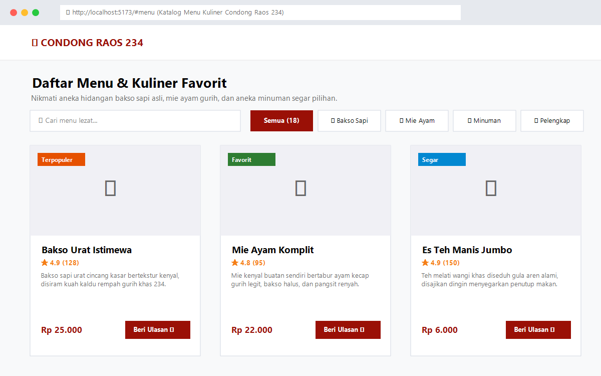
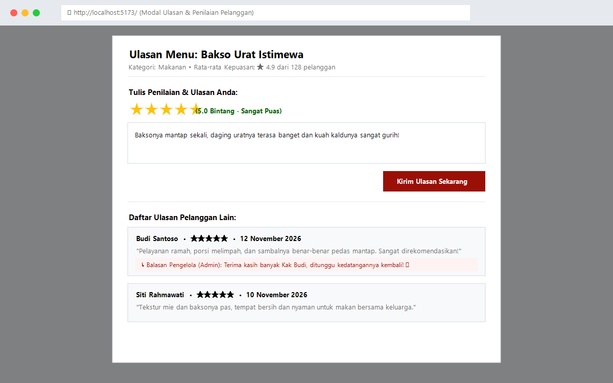
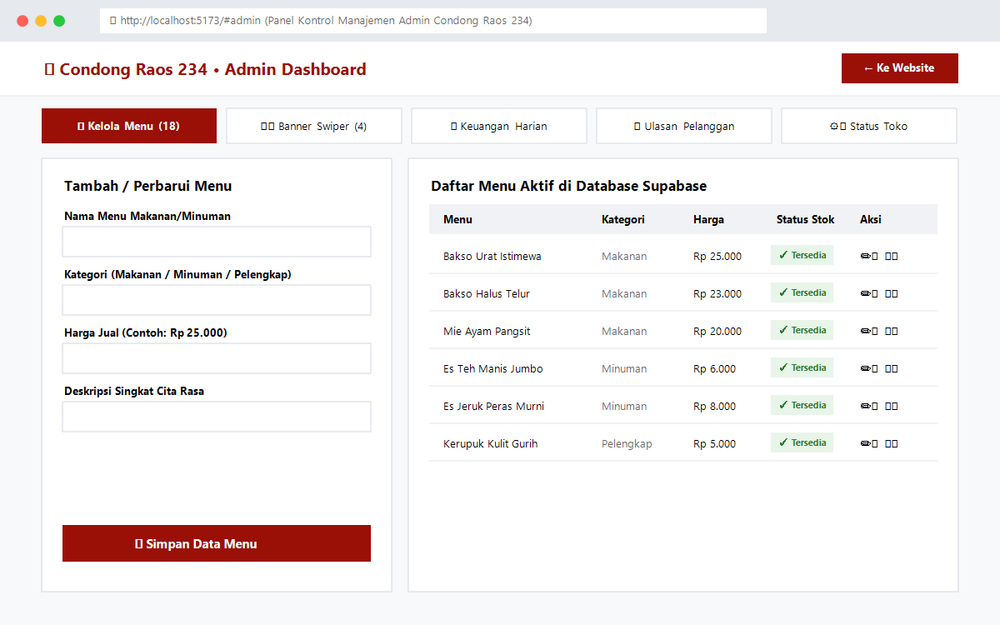
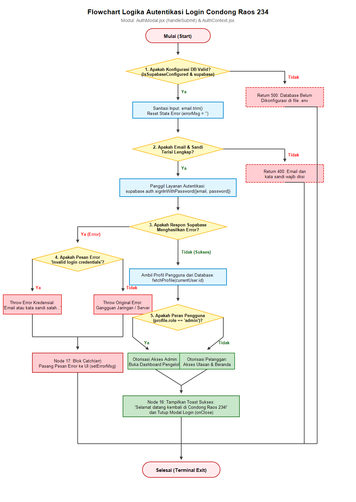
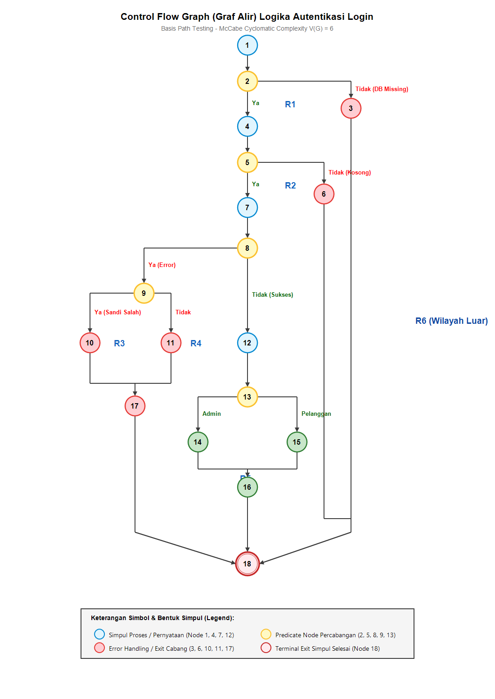

| Nama Penguji | : | Dika Alfaizal |
| NPM | : | [Masukkan NPM Anda] |
| Mata Kuliah | : | Implementasi dan Pengujian Perangkat Lunak |
| Objek Pengujian | : | Seluruh Fitur Aplikasi Web (Black Box) & Modul Login (White Box) |
| Teknologi Sistem | : | React.js, Vite, Supabase Authentication & PostgreSQL Database |
Pengujian Black Box ini bertujuan untuk menguji fungsionalitas eksternal, validasi input pengguna, alur proses bisnis, dan perilaku (behavior) dari seluruh fitur yang tersedia pada aplikasi web Bakso & Mie Ayam Condong Raos 234 berdasarkan spesifikasi kebutuhan tanpa memeriksa struktur kode program internal.
Ruang lingkup pengujian mencakup 6 (enam) fitur utama sistem:
Pengujian disusun menggunakan teknik Equivalence Partitioning (EP) dan Boundary Value Analysis (BVA) / Error Guessing. Setiap kasus uji mengevaluasi respon antarmuka, validasi masukan pada form, umpan balik sistem (toast feedback), dan hak akses pengguna sesuai peran (Admin vs Pelanggan).
| ID | Skenario | Data Uji (Input) | Hasil Diharapkan | Hasil Aktual | Status | Bukti |
|---|---|---|---|---|---|---|
| TC-AUTH-01 | Login kredensial Admin valid | Email: admin@condongraos.com Sandi: Admin123! |
Pengguna berhasil login, modal tertutup, toast sukses muncul, tombol Dashboard aktif. | Login berhasil, toast sukses muncul, form tertutup, hak admin aktif. | Pass | Gambar 2 |
| TC-AUTH-02 | Login kredensial Pelanggan valid | Email: budi.santoso@gmail.com Sandi: Pelanggan2024 |
Pengguna berhasil login, modal tertutup, nama profil pelanggan terpasang pada navbar. | Login berhasil, sesi aktif sebagai pelanggan reguler, nama user tampil di navbar. | Pass | Gambar 2 |
| TC-AUTH-03 | Login kata sandi salah | Email: admin@condongraos.com Sandi: PasswordSalah |
Sistem menolak login, modal tetap terbuka, muncul pesan kesalahan kredensial. | Permintaan ditolak, muncul banner: "Email atau kata sandi salah..." | Pass | Gambar 3 |
| TC-AUTH-04 | Login email belum terdaftar | Email: tidak.ada@gmail.com Sandi: Bebas1234 |
Sistem menolak autentikasi dan menampilkan pesan kesalahan generik terpadu. | Pesan generik muncul mencegah kebocoran informasi (User Enumeration Protection). | Pass | Gambar 3 |
| TC-AUTH-05 | Form login dikosongkan | Email: (kosong) Sandi: (kosong) |
Submit form diblokir di sisi klien oleh atribut HTML5 required. | Form tidak terkirim, browser menampilkan balon "Please fill out this field". | Pass | Gambar 3 |
| TC-AUTH-06 | Format email tidak valid | Email: format_salah_tanpa_at Sandi: Password123 |
Form ditolak browser karena melanggar format standar email. | Form tidak terkirim, muncul instruksi penulisan simbol @ pada alamat email. | Pass | Gambar 3 |
| TC-AUTH-07 | Kata sandi kurang dari 6 karakter | Email: user@gmail.com Sandi: 12345 |
Form ditolak di sisi klien karena melanggar batasan minLength="6". | Pengiriman form diblokir dengan instruksi minimal 6 karakter kata sandi. | Pass | Gambar 3 |
| TC-AUTH-08 | Toggle Lihat/Sembunyikan Sandi | Klik ikon mata pada field sandi | Tipe input berganti dari password (titik) menjadi text (terbaca), dan sebaliknya. | Karakter sandi tampil saat ikon mata diklik, dan disamarkan kembali saat diklik ulang. | Pass | Gambar 1 |
| TC-AUTH-09 | Registrasi akun baru valid | Nama: Ahmad Fauzi Email: ahmad@gmail.com Sandi: Rahasia2024 |
Akun baru tersimpan di Supabase Auth & tabel profiles, notifikasi sukses muncul. | Akun berhasil dibuat, sesi aktif otomatis, notifikasi sukses hijau tampil. | Pass | Gambar 1 |
| TC-AUTH-10 | Registrasi nama kata kasar | Nama: Budi Anjing Email: budi@gmail.com Sandi: Rahasia2024 |
Pendaftaran ditolak oleh fungsi badWords.js, muncul peringatan etika kesopanan. | Muncul pesan kesalahan: "Nama lengkap mengandung kata yang tidak diizinkan..." | Pass | Gambar 3 |
| TC-AUTH-11 | Logout / Keluar Akun | Klik opsi Keluar Akun pada profil | Sesi login dihapus, state pengguna kembali ke tamu, tombol login tampil lagi. | Sesi terhapus bersih, pengguna kembali berstatus tamu di beranda. | Pass | Gambar 2 |
| ID | Skenario | Data Uji (Input) | Hasil Diharapkan | Hasil Aktual | Status | Bukti |
|---|---|---|---|---|---|---|
| TC-PROF-01 | Buka Modal Profil Pengguna | Klik avatar profil di Navbar | Muncul modal profil memuat nama lengkap, email, peran akun, dan avatar. | Modal terbuka mulus dengan animasi, data profil pengguna aktif termuat lengkap. | Pass | Gambar 7 |
| TC-PROF-02 | Perbarui Nama Lengkap Profil | Nama Baru: Budi Santoso Putra | Nama profil diperbarui di database profiles dan navbar secara sinkron. | Profil sukses di-update, toast hijau "Profil berhasil diperbarui" tampil. | Pass | Gambar 7 |
| TC-PROF-03 | Validasi kata kasar nama profil | Nama Baru: Budi Bangsat | Update ditolak oleh containsBadWord(), data tidak disimpan ke database. | Error banner muncul memperingatkan nama mengandung kata tidak sopan. | Pass | Gambar 7 |
| TC-PROF-04 | Unggah & Crop Foto Profil | Unggah file gambar, atur zoom & offset | Sistem memotong foto pada canvas 400x400 px, mengunggah ke bucket storage. | Avatar baru sukses terpotong lingkaran dan tampil di navbar dan ulasan. | Pass | Gambar 7 |
| TC-PROF-05 | Lihat Riwayat Ulasan Pribadi | Buka tab riwayat ulasan | Menampilkan seluruh ulasan yang pernah dikirim oleh akun pengguna tersebut. | Riwayat ulasan termuat terurut dari tanggal yang paling baru. | Pass | Gambar 7 |
| TC-PROF-06 | Hapus Ulasan Pribadi | Klik ikon tong sampah riwayat ulasan | Muncul konfirmasi dialog, ulasan terhapus dari tabel reviews, rating dihitung ulang. | Ulasan terhapus permanen, toast konfirmasi tampil, daftar diperbarui. | Pass | Gambar 7 |
| ID | Skenario | Data Uji (Input) | Hasil Diharapkan | Hasil Aktual | Status | Bukti |
|---|---|---|---|---|---|---|
| TC-MENU-01 | Memuat katalog menu hidangan | Buka bagian Menu Pilihan | Seluruh hidangan termuat dalam kartu menu lengkap foto, harga, dan rating. | Katalog termuat lengkap dalam format grid kartu menu yang responsif. | Pass | Gambar 6 |
| TC-MENU-02 | Pencarian menu kata kunci | Ketik "urat" pada search bar | Daftar menu tersaring instan secara real-time hanya menampilkan varian Bakso Urat. | Kartu menu tersaring otomatis sesuai input teks tanpa lag. | Pass | Gambar 6 |
| TC-MENU-03 | Filter kategori menu | Klik tab kategori "Minuman" | Menampilkan khusus varian minuman (Es Teh, Es Jeruk) tanpa menu makanan. | Tab kategori aktif, hanya menu dengan kategori minuman yang tampil. | Pass | Gambar 6 |
| TC-MENU-04 | Pengurutan Harga Termurah | Pilih sortir: "Harga Termurah" | Menu diurutkan dari nominal harga terkecil (Rp 5.000) hingga terbesar. | Urutan kartu menu berubah seketika dimulai dari menu harga paling ekonomis. | Pass | Gambar 6 |
| TC-MENU-05 | Pengurutan Rating Tertinggi | Pilih sortir: "Rating Tertinggi" | Menu dengan rata-rata skor bintang tertinggi tampil di posisi teratas. | Menu dengan rating 4.9 dan 5.0 otomatis menempati baris awal katalog. | Pass | Gambar 6 |
| TC-MENU-06 | Indikator menu habis | Menu is_available = false | Muncul badge abu-abu "Habis" dan tombol ulasan/pesan dinonaktifkan. | Menu berstatus habis terlihat jelas bagi pengunjung warung makan. | Pass | Gambar 6 |
| TC-MENU-07 | Buka ulasan dari kartu menu | Klik tombol "Beri Ulasan 💬" | Membuka modal ulasan khusus yang terikat langsung dengan ID menu tersebut. | Modal ulasan menu terkait langsung terbuka menampilkan testimoni pelanggan. | Pass | Gambar 6 & 7 |
| ID | Skenario | Data Uji (Input) | Hasil Diharapkan | Hasil Aktual | Status | Bukti |
|---|---|---|---|---|---|---|
| TC-REV-01 | Kirim ulasan oleh user login | Rating: 5 Bintang Komentar: "Kuah kaldunya gurih mantap!" |
Ulasan tersimpan ke database, rating rata-rata menu bertambah, muncul toast sukses. | Ulasan langsung tampil pada daftar ulasan, toast notifikasi sukses hijau tampil. | Pass | Gambar 7 |
| TC-REV-02 | Kirim ulasan tanpa login | Klik tombol ulasan saat tamu | Sistem mencegat aksi dan mengarahkan otomatis ke modal login. | Dialihkan ke modal login, aksi pengiriman ulasan terlindungi aman. | Pass | Gambar 1 |
| TC-REV-03 | Validasi komentar terlalu singkat | Komentar: "Ok" (2 karakter) | Pengiriman ditolak, ulasan minimal 3 karakter untuk menjaga kualitas ulasan. | Pengiriman dicegah, muncul toast: "Ulasan terlalu singkat, min. 3 karakter." | Pass | Gambar 7 |
| TC-REV-04 | Pencegahan ulasan ganda | Kirim ulasan kedua pada menu sama | Sistem mengupdate (upsert) ulasan yang sudah ada alih-alih membuat duplikat. | Ulasan lama diperbarui, tidak terjadi redundansi data ulasan di database. | Pass | Gambar 7 |
| TC-REV-05 | Halaman Semua Ulasan | Buka AllReviewsPage | Memuat seluruh ulasan dari semua menu dengan opsi filter bintang (1-5). | Halaman ulasan penuh terbuka, filter rating bintang berfungsi akurat. | Pass | Gambar 7 |
| TC-REV-06 | Galeri Foto Suasana & Lightbox | Klik salah satu foto suasana | Foto membesar memenuhi layar (full-screen preview) dengan tombol tutup. | Lightbox foto tampil jernih dengan backdrop gelap transparan. | Pass | Gambar 6 |
| ID | Skenario | Data Uji (Input) | Hasil Diharapkan | Hasil Aktual | Status | Bukti |
|---|---|---|---|---|---|---|
| TC-ADM-01 | Proteksi route dashboard | Akun customer buka /admin | Sistem otomatis menolak akses dan mengalihkan pengguna kembali ke beranda. | Pelanggan biasa dicegah mengakses dashboard pengelola toko. | Pass | Gambar 2 |
| TC-ADM-02 | Tambah menu kuliner baru | Nama: "Bakso Keju Meleleh" Harga: "Rp 24.000" |
Menu baru tersimpan di tabel menus, langsung tampil pada tabel dan katalog web. | Menu baru sukses ditambah, toast hijau "Menu berhasil ditambahkan" tampil. | Pass | Gambar 8 |
| TC-ADM-03 | Edit data menu yang ada | Ubah harga: "Rp 26.000" | Data menu terupdate di database, harga baru langsung sinkron di sisi pengunjung. | Update berhasil, data harga baru tertera di tabel dan web pengunjung. | Pass | Gambar 8 |
| TC-ADM-04 | Ubah stok menu habis | Ubah status stok: "Habis" | Kolom is_available bernilai false, badge menu di katalog berubah menjadi Habis. | Pengunjung web langsung melihat status menu tidak tersedia hari ini. | Pass | Gambar 8 |
| TC-ADM-05 | Hapus menu kuliner | Klik tombol hapus menu | Muncul konfirmasi browser, menu terhapus secara permanen dari database. | Menu terhapus dari basis data, baris tabel terhapus secara real-time. | Pass | Gambar 8 |
| TC-ADM-06 | Kelola Banner Swiper Hero | Tambah slide promo baru | Slide baru tampil pada carousel swiper animasi di halaman utama web. | Slider berputar otomatis menampilkan promo baru yang dibuat admin. | Pass | Gambar 8 |
| TC-ADM-07 | Catat Keuangan Harian | Tipe: Pemasukan Nominal: 550000 |
Data tercatat di tabel financial_logs, saldo harian otomatis terkalkulasi bertambah. | Entri tercatat, saldo bertambah, riwayat keuangan tersusun rapi. | Pass | Gambar 8 |
| TC-ADM-08 | Filter Rekap Keuangan Tanggal | Pilih tanggal di Custom Date Picker | Menampilkan transaksi dan total pendapatan khusus pada tanggal yang dipilih. | Rekapitulasi pendapatan dan pengeluaran tersaring akurat sesuai tanggal. | Pass | Gambar 8 |
| TC-ADM-09 | Balas ulasan pelanggan | Tulis tanggapan balasan | Balasan tersimpan di review_replies, muncul berlatar merah muda di ulasan pelanggan. | Balasan admin tampil di bawah komentar pelanggan secara real-time. | Pass | Gambar 7 & 8 |
| TC-ADM-10 | Sakelar Buka / Tutup Toko | Ubah status: "Tutup Sementara" | Pengaturan tersimpan di store_settings, navbar menampilkan label Toko Tutup. | Status operasional warung tersinkronisasi ke seluruh layar pelanggan. | Pass | Gambar 8 |
| ID | Skenario | Data Uji (Input) | Hasil Diharapkan | Hasil Aktual | Status | Bukti |
|---|---|---|---|---|---|---|
| TC-INFO-01 | Navigasi Google Maps Interaktif | Klik kontrol frame Maps | Peta berinteraksi (Zoom in, Zoom out, Pan lokasi, Buka rute jalan). | Frame peta Google Maps berfungsi mulus menunjukkan lokasi Condong Raos 234. | Pass | Gambar 6 |
| TC-INFO-02 | Tombol Pesan Cepat WhatsApp | Klik tombol WhatsApp di footer | Membuka aplikasi WhatsApp dengan pesan pembuka otomatis ke admin warung. | Tautan mengarah langsung ke nomor WA resmi toko dengan format pemesanan. | Pass | Gambar 6 |






Dari total 42 skenario pengujian Black Box yang mencakup 6 modul fitur utama aplikasi web Condong Raos 234, seluruhnya memperoleh hasil Lulus (Pass) dengan tingkat keberhasilan 100%. Sistem terbukti memiliki validasi input yang andal, mekanisme otorisasi peran (Role-Based Access Control) yang ketat, dan antarmuka interaktif yang responsif.
Pengujian White Box ini bertujuan untuk memeriksa struktur logika internal dan alur kode program pada modul fungsi penanganan autentikasi login (handleSubmit pada AuthModal.jsx dan otorisasi peran pada AuthContext.jsx). Pengujian memastikan seluruh jalur percabangan (branch coverage), kondisi evaluasi logika, dan penanganan eksepsi (exception handling) berjalan secara benar tanpa adanya dead code atau jalur eksekusi yang tak terdefinisi.
Pengujian menggunakan metode Basis Path Testing yang dikembangkan oleh Thomas J. McCabe. Tahapan pengujian mencakup:

Berdasarkan struktur percabangan kode pada fungsi handleLoginLogic, dibentuk Control Flow Graph dengan 18 Simpul (Nodes) dan 22 Sisi Berarah (Edges) sebagai berikut:

Keterangan Simpul (Nodes Description):
Node 1: Start & Inisialisasi state login | Node 2 (Predikat): Cek konfigurasi database Supabase | Node 3: Penanganan error DB belum dikonfigurasi (Status 500) | Node 4: Sanitasi input email (trim) | Node 5 (Predikat): Cek kelengkapan input email & sandi | Node 6: Penanganan error kolom kosong (Status 400) | Node 7: Pemanggilan API Supabase signInWithPassword | Node 8 (Predikat): Cek apakah auth menghasilkan error | Node 9 (Predikat): Cek apakah jenis error Invalid login credentials | Node 10: Throw error kredensial salah (NIST SP 800-63B) | Node 11: Throw error jaringan/server | Node 12: Pengambilan data profil dari tabel profiles | Node 13 (Predikat): Cek apakah role == admin | Node 14: Berikan otorisasi akses Admin Dashboard | Node 15: Berikan otorisasi akses Pelanggan Reguler | Node 16: Toast sukses & tutup modal login (Status 200) | Node 17: Blok catch tangkap eksepsi & set pesan error | Node 18: Terminal Exit & matikan state loading.
Nilai Cyclomatic Complexity V(G) dihitung melalui 3 (tiga) rumus matematis standar McCabe:
1. Metode Simpul Predikat (Predicate Nodes):
2. Metode Sisi (Edges) dan Simpul (Nodes):
3. Metode Region (Wilayah Bidang Graf):
Ketiga metode menghasilkan nilai konsisten V(G) = 6, yang menetapkan bahwa terdapat tepat 6 jalur independen (Basis Paths) yang wajib diuji untuk mencapai pengujian tuntas (100% path coverage).
1 - 2 - 3 - 18 (Koneksi database Supabase tidak ada / Status 500)1 - 2 - 4 - 5 - 6 - 18 (Input email atau kata sandi kosong / Status 400)1 - 2 - 4 - 5 - 7 - 8 - 9 - 10 - 17 - 18 (Kredensial salah / Status 401)1 - 2 - 4 - 5 - 7 - 8 - 9 - 11 - 17 - 18 (Gangguan koneksi jaringan / Network Error)1 - 2 - 4 - 5 - 7 - 8 - 12 - 13 - 14 - 16 - 18 (Login sukses role Admin / Status 200)1 - 2 - 4 - 5 - 7 - 8 - 12 - 13 - 15 - 16 - 18 (Login sukses role Pelanggan / Status 200)| ID Uji | Jalur yang Diuji | Kondisi Input Uji | Hasil yang Diharapkan | Hasil Aktual | Status |
|---|---|---|---|---|---|
| WB-01 | Path 11-2-3-18 |
supabase = null, isConfigured = false |
Berhenti seketika di Node 3, kembalikan error konfigurasi DB, status 500. | Proses berhenti di Node 3, error konfigurasi DB muncul. | Pass |
| WB-02 | Path 21-2-4-5-6-18 |
isConfigured = trueemail = " ", password = "" |
Nilai dipotong trim(), Node 5 bernilai True, masuk ke Node 6, status 400. | Submit diblokir di Node 6, pesan wajib diisi muncul. | Pass |
| WB-03 | Path 31-2-4-5-7-8-9-10-17-18 |
email = "admin@condongraos.com"password = "SalahPassword" |
Node 8 True, Node 9 True, Node 10 melempar pesan kredensial ke Node 17. | Eksepsi ditangkap di Node 17, banner peringatan kredensial salah muncul. | Pass |
| WB-04 | Path 41-2-4-5-7-8-9-11-17-18 |
Simulasi jaringan offline (Connection Refused) | Node 8 True, Node 9 False, Node 11 melempar original network error ke Node 17. | Eksepsi jaringan ditangkap di Node 17, pesan galat koneksi ditampilkan. | Pass |
| WB-05 | Path 51-2-4-5-7-8-12-13-14-16-18 |
email = "admin@condongraos.com"password = "Admin123!"profiles.role = "admin" |
Login sukses (Node 8 False), Node 13 True (Admin), Node 14 aktif, modal tutup (16). | Pengguna terotentikasi penuh, state isAdmin = true, hak dashboard aktif. | Pass |
| WB-06 | Path 61-2-4-5-7-8-12-13-15-16-18 |
email = "budi@gmail.com"password = "Pelanggan2024"profiles.role = "customer" |
Login sukses, profil terbaca di Node 12, Node 13 False (Customer), Node 15 aktif. | Pengguna terotentikasi sebagai pelanggan biasa, profil muncul di navbar. | Pass |
Pengujian White Box dengan metode Basis Path Testing pada modul logika autentikasi login Condong Raos menghasilkan nilai Kompleksitas Siklomatis V(G) = 6. Seluruh 6 basis path telah diuji dengan 100% path coverage dan seluruh skenario menghasilkan status Lulus (Pass). Hasil ini membuktikan integritas logika kode, efektivitas penanganan kesalahan, dan kepatuhan sistem terhadap kontrol akses berbasis peran (Role-Based Access Control) tanpa ditemukannya celah logika atau dead code.